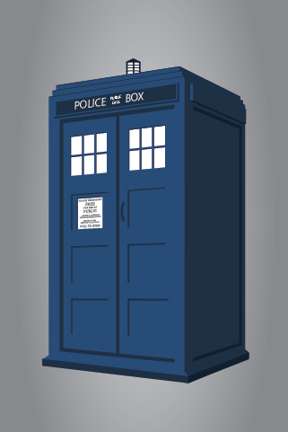

TARDIS Go transpilerTARDIS Go is a Go->Haxe transpiler. The Haxe compiler then generates equivalent code for JavaScript, ActionScript, C++, Java, C#, PHP and Neko. The objective of the project is to save time and energy by enabling transpilations of the same TARDIS Go code to form part of an application written in any of these target languages. On the client-side, using Haxe libraries like OpenFL allows TARDIS Go to be deployed on a very wide range of platforms, including iOS, Android, Tizen, Windows, Mac, Linux, HTML5 and Flash. Micro FAQ:
| 
Future presentations: |
Below is a live example showing a goroutine reacting to a channel of events generated by your mouse. This version is in JavaScript, but a Flash version is also available here. Both were created from exactly the same source code, which is available here in subdirectory openfl/gohandlingmouseevents.
Kindly hosted by GitHub Pages.